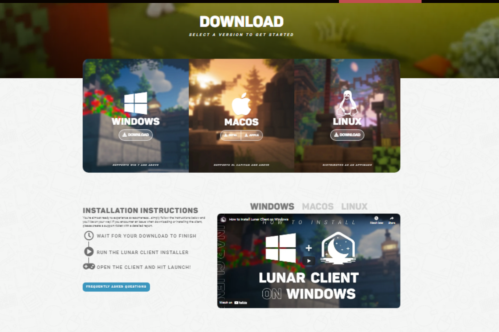
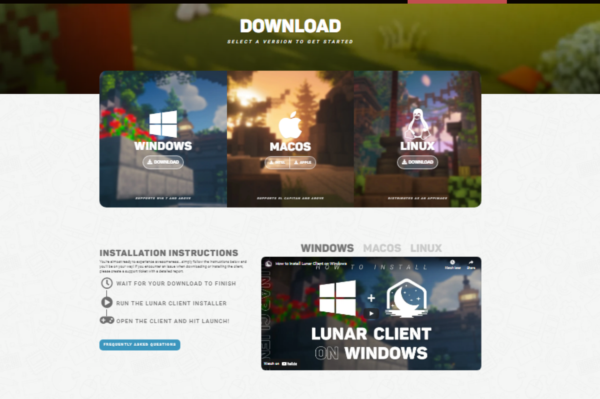
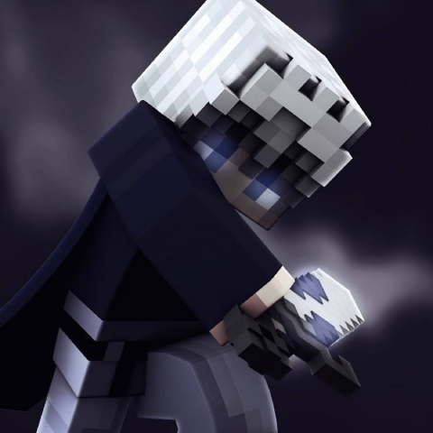

CONNOR LEWIS
Website development & programming enthusiast


 



Previous Work
-
Statsify
The Statsify team are the creators of the largest and most advanced Hypixel bot as well as Minecraft overlay. This is a massive discord bot orientated around Minecraft statistics for a server called Hypixel. This discord bot services over 2M unique users across 40k guilds. As part of my work with Statsify I was involved with almost every aspect of the bot, including: the website, the custom API, the actual bot and the overlay; mostly coded in JavaScript. You can check out up to date stats about the bot here. -
Lunar Client
Lunar Client is the largest Minecraft client. This is a massive client which allows for quality of life modifications ontop of the game. It is used by over 100k concurrent users. As part of my work with Lunar Client I was involved in working with the team of web developers to design and create their custom site including the backend and frontend compontents coded in various languages and frameworks. -
Bedwars Tinder
As part of a fun challenge to feature on my YouTube channel I decided to design a fullstack project which I single-handedly designed. This project surpassed any expectation that I had for the project growing over 20k unique users and over 0.25M matches and conversations. This project held up extremely well under the unexpected load and showcases a huge amount of experience in full stack development. -
Competitive Bedwars
Competitive Bedwars is a huge community of people who seek to make the Minecraft gamemode of Bedwars more competitive. They group together in a discord to fight against each other to increase their ranking and prove they are the best. As part of my work for this community I created a custom Discord bot to ensure they could queue into their games. This bot also keeps track of their ELO and statistics such as kills and deaths. It involves an advanced matchmaking system to queue users together in fair and balanced fights. This project helped me learn a huge amount of advanced strategies involved in matchmaking as well as balanced ELO algorithms. -
Other
There are many other smaller commissions and experience I have which I don't believe fits into it's own category. These are as follows:
■ During my time making commissions for discord I have made a huge amount of ticket and support systems. Over this time I have found a system for making ticket bots which is customisable and effective. Some examples of these bots can be seen throughout the gallery.
■ Alongside making discord bots I have a huge passion for open sourcing the solutions I provide when I am sure they are clean and flexible. This includes a custom bot template which is used by many other developers who are learning and is a simple to modify template. This means that once I deliver a product to you it is extremely simple to configure and modify it how you would like. You can check out the bot template here.
Connor Lewis
I'm a 17 year old developer who works with clients throughout the industry to enhance their community experience developing responsive websites and discord bots while offering a premium service. I have over 4 years programming experience working with a huge amount of companies with hundereds of happy clients throughout the world. I work to ensure my products are delivered on time and to a high standard while maintaining a stong line of communication with the client!
Popular Clients
-
 Purpled
Purpled
"I have worked with Connor on many occasions and he has always been quick and effective to pull off anything I throw at him." -
 krustydavid
krustydavid
"Connor has helped in my community for the longest time and he's always came across as a genuine and respectful guy to work with." -
 im_a_squid_kid
im_a_squid_kid
"When I first reached out to Connor I had an idea in mind and he pulled it off flawlessly." -
 Competitive Bedwars
Competitive Bedwars
"Connor has helped to develop our Ranked Bedwars bot to the best it can be. All our suggestions and issues he has managed to fix instantly without any problems." -
Lunar Client
"Connor is a hard working individual who is determined, reliable, and respectful. He was a great addition to the Lunar Client development team!" -

Dogcatwhat
"Connor has always been able to do things I’ve asked for, quickly and always on schedule if he has told me a time period for a project."